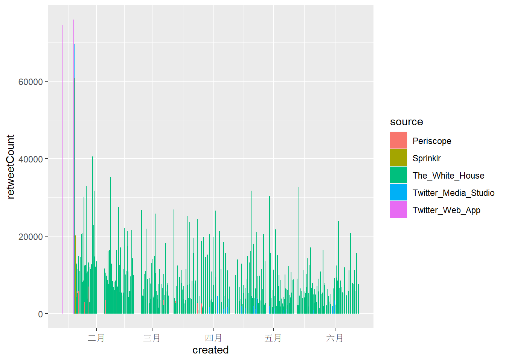
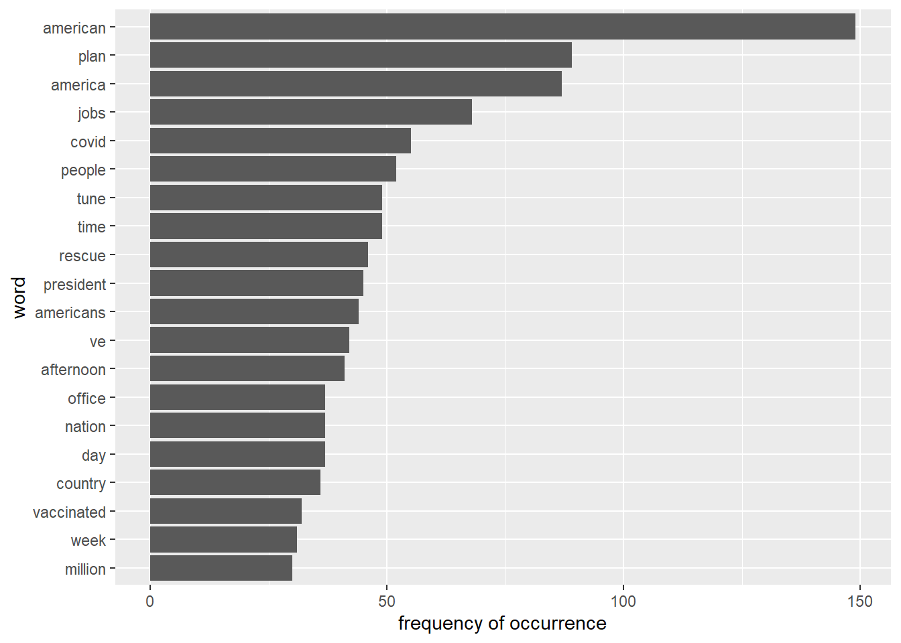

From @JoeBiden to @POTUS
組員：簡郁展, 潘立恆, 邱繼賢, 劉慧新, 陳暘
2021/6/8
1 Problematic
拜登正式就任美國第46任總統後，Twitter也將總統官方帳號POTUS轉交拜登團隊。多數美國媒體聲稱過去
@JoeBiden的經營主要面向美國大眾推廣政策理念，相反的川普帳號只跟自己的支持者對話。而時下未見有拜登@POTUS的詳細分析，我們有興趣的是拜登@POTUS在公共關係經營上還是走傳統、規律路線嗎？拜登@POTUS是僅僅將twitter當作一個宣傳政令跟政府講話的媒體平台，還是存在明顯的情緒宣傳？本專案預設即使去掉停詞之後，取得的關鍵字對於推文含意的辨識度還是有權重差異的。有些特別具象化單詞會能夠指涉與特定政策意涵或與特定政策事件相關，例如
vaccine/covid/jobs/economy/plan等等。而其他較模糊的政治相關用語(例如president/senate/congress等)、一般單詞則被視為不具有明確政策資訊內涵。因此，本專案簡單假設如果
@POTUS只是單純宣傳政令或講話的帳號，應該大量含有上述辨識度高的具象化單字以指涉特定議題或事件。或者，在喜歡數或轉推數較高的推文中，要可以觀察到上述情形。同時，本文也會比較@JoeBiden在情緒分析是否與@POTUS有明顯不同。
2 General Analysis
2.1 Preprocessing
首先，從Twitter API與twitteR()獲得的推文擷取資料載入，資料包含拜登@POTUS帳號截止至2021年6月13日共760筆的資料。再來剔除不必要的欄位，並進行發推來源的提取與時區調整。
library(dplyr)
library(tibble)
library(ggplot2)
library(stringr)
library(tidyr)
library(lubridate)
library(scales)
library(tidytext)
library(textdata)
library(cowplot)
#Load the dataset obtained from TwitteR package
load(file = "biden_tweets_df.rda")
load(file = "AllJoeBidenTweets.rda")
# Mutate source column and select other meaningful columns
df <- biden_tweets_df %>%
mutate(source = sapply(biden_tweets_df$statusSource , function(x) {
if (str_detect(x, pattern = "Twitter Web App")) return("Twitter_Web_App")
else if (str_detect(x, pattern = "Periscope")) return("Periscope")
else if (str_detect(x, pattern = "Twitter Media Studio")) return("Twitter_Media_Studio")
else if (str_detect(x, pattern = "Sprinklr")) return("Sprinklr")
else return("The_White_House")
})) %>%
select(id, source, text, created, retweetCount, favoriteCount) %>%
mutate(hour = hour(with_tz(created, "EST")))2.2 Collect tweet words
使用unnest_tokens()從推文內容中提取出單詞並去掉停詞。
reg <- "([^A-Za-z\\d#@']|'(?![A-Za-z\\d#@]))"
tweet_words <- df %>%
filter(!str_detect(text, '^"')) %>%
mutate(text = str_replace_all(text, "https://t.co/[A-Za-z\\d]+|&", "")) %>%
unnest_tokens(word, text, token = "regex", pattern = reg) %>%
filter(!word %in% stop_words$word,
str_detect(word, "[a-z]")) %>%
arrange(desc(favoriteCount))2.3 Time line
對@POTUS從2月到六月的發文狀況做總覽，觀察不同發文來源在favoriteCount 以及 retweetCount的表現。
2.3.1 Time line of retweetCount and FavoriteCount from Feb to June
下面兩張圖可以明顯看出大部分推文都是從The White House 發出來的，而favoriteCount的數量級大致上為retweetCount的十倍，兩者趨勢大體上相同。
Twitter Web App總共只發了四篇貼文，但其中的兩篇皆獲得了幾乎最高的retweetCount 和 favoriteCount。Sprinklr也只有5篇貼文，但favoriteCount/retweetCount前10名的推文中，就有3篇來自Sprinklr。- 但這些現象都只發生在一月拜登剛就職總統的時候。
ggplot(data = df) +
geom_col(mapping = aes(x = created, y = retweetCount, color = source, fill = source))
ggplot(data = df) +
geom_col(mapping = aes(x = created, y = favoriteCount, color = source, fill = source))2.3.2 Tweeting in Hour of a Day
將發文時間轉換成美東時間後，可以觀察到以下現象：
@POTUS發文在下午較頻繁，並在下午1點、晚上8點左右達到高峰，而且凌晨1-5點的時間段發文比例相當低，發文時間相當規律。- 將每個時間段累積喜歡數加總後，發現與發文比例的趨勢相似，但發文數量多也可能造成喜歡數加總較多的現象。
- 若檢視每個時間段的喜歡數平均，在下午12-1點、下午5-6點、晚上8-10點都有明顯上升的趨勢，但與前兩張圖不同的是最高峰並非發生在晚上8點。除了晚上8點後發文比例比較少外，晚上8點後轉推數明顯較高也可能是提高觸及率與喜歡數的主要原 因。此外，若內文包含重要議題或是受關注的社會事件，也可能獲得可觀的喜歡與轉推。
tweeting_hour <- df %>%
group_by(hour) %>%
summarise(number=n(),
sum_favoriteCount = sum(favoriteCount),
sum_retweetCount = sum(retweetCount),
mean_favoriteCount = mean(favoriteCount),
mean_retweetCount = mean(retweetCount)) %>%
arrange(desc(number))
p1 <- df %>%
count(hour = hour(with_tz(created, "EST"))) %>%
mutate(percent = n / sum(n)) %>%
ggplot(mapping = aes(hour, percent)) +
geom_line() +
scale_y_continuous(labels = percent_format()) +
labs(x = "Hour of a day", y = "% of tweets")
p2 <- ggplot(tweeting_hour) +
geom_line(aes(hour, sum_favoriteCount), color = "blue") +
labs(x = "Hour of a day")
p3 <- ggplot(tweeting_hour) +
geom_line(aes(hour, mean_favoriteCount), color = "red") +
labs(x = "Hour of a day")
p4 <- ggplot(tweeting_hour) +
geom_line(aes(hour, mean_retweetCount), color = "darkgreen") +
labs(x = "Hour of a day")
plot_grid(p1, p2, p3, p4, ncol = 2)
2.4 Picture/Link from each source
@POTUS的推文幾乎都附有照片或連結，差距非常顯著。藉由直接觀察拜登的推文，以及推文附帶的文字敘述進而推論這些圖片或連結多與特定會議、政策或社會事件有關。(詳參Comparison of Words)
# Whether a Picture/Link is likely to be included in a Tweet
picture <- df %>%
filter(!str_detect(text, '^"')) %>%
count(source, picture = ifelse(str_detect(text, "t.co"),
"Picture/link", "No picture/link"))
picture## # A tibble: 7 x 3
## source picture n
## <chr> <chr> <int>
## 1 Periscope Picture/link 30
## 2 Sprinklr No picture/link 1
## 3 Sprinklr Picture/link 4
## 4 The_White_House No picture/link 49
## 5 The_White_House Picture/link 628
## 6 Twitter_Media_Studio Picture/link 45
## 7 Twitter_Web_App Picture/link 3df %>%
filter(!str_detect(text, '^"')) %>%
count(picture = ifelse(str_detect(text, "t.co"),
"Picture/link", "No picture/link")) %>%
ggplot() +
geom_bar(aes(picture, n), stat = "identity", width = 0.5) +
labs(x = "", y = "count")
3 Comparison of Words
在文字分析的環節，我們希望可以知道: - @POTUS最常提到的詞彙，以及這些詞彙是否是Problematic的假設中在政策意涵上具有辨識度的字詞。 - 區分這些詞彙的來源傾向。
3.1 Word Frequency Plot
首先是詞頻圖，可以發現@POTUS整體而言政策辨識度高的詞彙包含: plan/jobs/covid/tune/rescue/vaccinated。推測與拜登的紓困法案《The American Jobs Plan》、《The American Rescue Plan Act of 2021》以及疫苗施打有關。
tweet_words %>%
count(word) %>%
mutate(word = reorder(word, n)) %>%
top_n(20, n) %>%
ggplot() +
geom_bar(aes(x = word, y = n), stat = "identity") +
ylab("frequency of occurrence") +
coord_flip()3.2 Word Weighting of different sources (Video Streaming App and The White House)
接著我們希望了解@POTUS在，尤其是使用影音串流平台(Periscope)以及一般發文管道The White House在文字使用傾向上區別。因此，可以透過計算勝算比(odds ratio)來知道相對於影音平台，The White House更傾向提及那些文字內容，反之亦然。
# Word Weighting of different sources (Video Streaming App and The White House)
WhiteHouse_periscope_ratios <- tweet_words %>%
count(word, source) %>%
filter(sum(n) >= 5) %>%
spread(source, n, fill = 0) %>%
ungroup() %>%
mutate_each(funs((. + 1) / sum(. + 1)), -word) %>%
mutate(logratio = log2(The_White_House / Periscope)) %>%
arrange(desc(logratio))
WhiteHouse_periscope_ratios %>%
group_by(logratio > 0) %>%
top_n(8, abs(logratio)) %>%
ungroup() %>%
mutate(word = reorder(word, logratio)) %>%
ggplot(aes(word, logratio, fill = logratio < 0)) +
geom_bar(stat = "identity", width = 0.5) +
coord_fixed(ratio = 1000000) +
coord_flip() +
ylab("The White House / Periscope log ratio") +
scale_fill_manual(name = "", labels = c("The White House", "Periscope"),
values = c("red", "lightblue"))
可以發現從影音平台發布的推文更常標註其他 twitter 帳號，包含
4 Sentiment Analysis
4.1 Tweets Sentiment Overview
sentiment_overview <- tweet_words %>%
inner_join(get_sentiments("nrc")) %>%
filter(!is.na(sentiment)) %>%
count(sentiment, sort = TRUE)
sentiment_overview## # A tibble: 10 x 2
## sentiment n
## <chr> <int>
## 1 positive 863
## 2 trust 591
## 3 anticipation 447
## 4 negative 386
## 5 joy 285
## 6 fear 224
## 7 sadness 172
## 8 anger 168
## 9 surprise 149
## 10 disgust 74ggplot(sentiment_overview) +
geom_bar(aes(x = reorder(sentiment, n), y = n), stat = "identity") +
labs(x = "sentiment", y = "count") +
coord_flip()
4.2 Tweets Sentiment by Source
sources <- tweet_words %>%
group_by(source) %>%
mutate(total_words = n()) %>%
ungroup() %>%
distinct(id, source, total_words)
by_source_sentiment <- tweet_words %>%
inner_join(get_sentiments("nrc"), by = "word") %>%
count(sentiment, id) %>%
ungroup() %>%
complete(sentiment, id, fill = list(n = 0)) %>%
inner_join(sources) %>%
group_by(source, sentiment, total_words) %>%
summarize(words = sum(n)) %>%
arrange(desc(total_words)) %>%
ungroup()
by_source_sentiment## # A tibble: 50 x 4
## source sentiment total_words words
## <chr> <chr> <int> <dbl>
## 1 The_White_House anger 5210 156
## 2 The_White_House anticipation 5210 414
## 3 The_White_House disgust 5210 67
## 4 The_White_House fear 5210 207
## 5 The_White_House joy 5210 267
## 6 The_White_House negative 5210 360
## 7 The_White_House positive 5210 780
## 8 The_White_House sadness 5210 162
## 9 The_White_House surprise 5210 138
## 10 The_White_House trust 5210 544
## # ... with 40 more rows4.3 Usage of Common Sentimental Words
nrc_word_counts <- tweet_words %>%
inner_join(get_sentiments("nrc")) %>%
count(word, sentiment, sort = TRUE) %>%
ungroup()
nrc_word_counts$sentiment =
factor(nrc_word_counts$sentiment, levels = sentiment_overview$sentiment)
nrc_word_counts %>%
group_by(sentiment) %>%
top_n(8, n) %>%
arrange(desc(n)) %>%
ungroup() %>%
ggplot() +
geom_histogram(aes(x = reorder(word, n), y = n), stat = "identity", width = 0.75) +
coord_flip() +
facet_wrap(~sentiment, scales = "free") +
theme(axis.text.y = element_text(size = rel(0.75))) +
labs(x = "Word", y = "", title = "Frequency of Occurrence by Sentiment")
4.4 Usage of Common Sentimental Words with Top Fifty FavoriteCount
## # A tibble: 10 x 2
## sentiment n
## <chr> <int>
## 1 positive 117
## 2 trust 104
## 3 anticipation 73
## 4 negative 59
## 5 joy 45
## 6 fear 25
## 7 surprise 24
## 8 anger 23
## 9 sadness 22
## 10 disgust 6favorite_word_counts <- favorite_words %>%
inner_join(get_sentiments("nrc")) %>%
count(word, sentiment, sort = TRUE) %>%
ungroup()
favorite_word_counts$sentiment =
factor(favorite_word_counts$sentiment, levels = sentiment_overview_50$sentiment)
favorite_word_counts %>%
filter(n > 1) %>%
group_by(sentiment) %>%
top_n(8, n) %>%
ggplot() +
geom_histogram(aes(x = reorder(word, n), y = n), stat = "identity", width = 0.75) +
coord_flip() +
facet_wrap(vars(sentiment), scales = "free") +
theme(axis.text.y = element_text(size = rel(0.75))) +
labs(x = "Word", y = "", title = "Words with Top Fifty FavoriteCount by Sentiment")4.5 Compared with @JoeBiden
reg <- "([^A-Za-z\\d#@']|'(?![A-Za-z\\d#@]))"
tweet_words2 <- AllJoeBidenTweets %>%
filter(!str_detect(tweet, '^"')) %>%
mutate(text = str_replace_all(tweet, "https://t.co/[A-Za-z\\d]+|&", "")) %>%
unnest_tokens(word, text, token = "regex", pattern = reg) %>%
filter(!word %in% stop_words$word,
str_detect(word, "[a-z]")) %>%
arrange(desc(likes))
sentiment_counts <- tweet_words2 %>%
left_join(get_sentiments("nrc")) %>%
count(word, sentiment, sort = TRUE) %>%
ungroup()
sentiment_df = sentiment_counts %>%
group_by(sentiment) %>%
summarise(n = n()) %>%
arrange(desc(n)) %>%
ungroup()
sentiment_df %>%
filter(!is.na(sentiment)) %>%
ggplot() +
geom_bar(aes(x = n, y = reorder(sentiment, n)), stat = "identity") +
labs(x = "count", y = "sentiment")sentiment_counts$sentiment =
factor(sentiment_counts$sentiment, levels = sentiment_df$sentiment)
sentiment_counts %>%
group_by(sentiment) %>%
top_n(8, n) %>%
arrange(desc(n)) %>%
ungroup() %>%
ggplot() +
geom_histogram(aes(x = reorder(word, n), y = n), stat = "identity", width = 0.75) +
coord_flip() +
facet_wrap(vars(sentiment), scales = "free") +
theme(axis.text.y = element_text(size = rel(0.75))) +
labs(x = "Word", y = "", title = "Frequency of Occurrence by Sentiment")